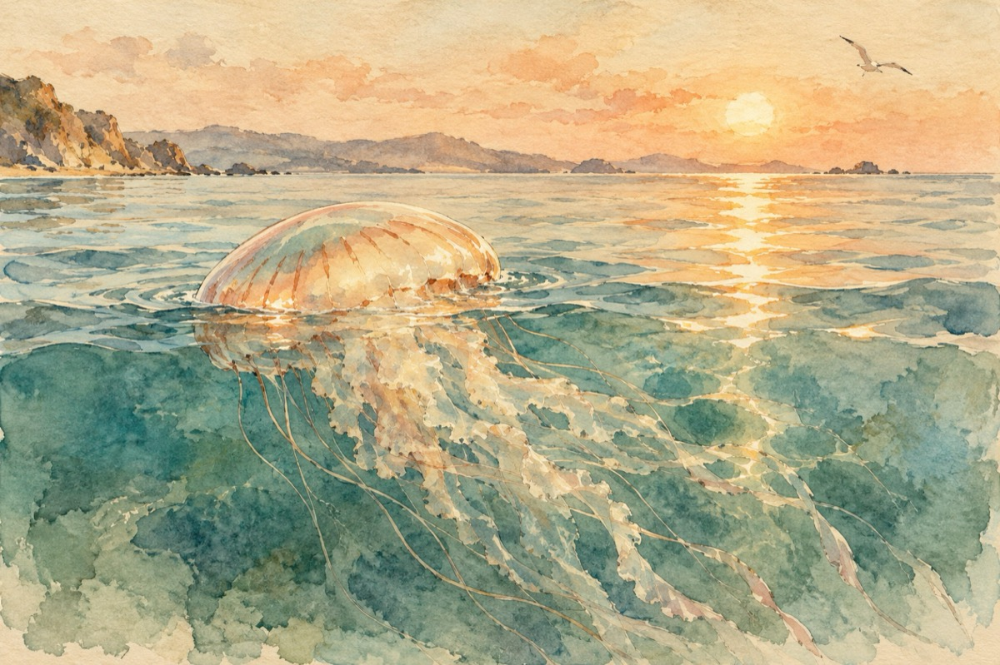

Astăzi marea
Astăzi marea s-a primenit în haină nouă
Pescărușii au venit din nou la treabă
Misterele nopții s-au transfornat în rouă
Până și peștii din străfunduri se întreabă,
De ce la suprafață-i atâta grabă?!
Iar soarele se scaldă luminos în valuri
O meduză pe ape face plajă
Bibanul sălbatic poartă cu el moravuri
Încălecat pe-un cal de mare e ca o vrajă
Tu pământene, ce-ai pus picioru-n mare
Și simți sub talpă o dragoste dorită,
Cât mai e pân’ la fericire oare?
Când te vei arunca în marea cu ispită?!
Când vei simți nisipul ce te-mbrățișează
Iar soarele cel așteptat să vină
Să-l simți cu tine și cum el te bronzează.
Toate acestea așa cum nectarul e căutat de o albină.
Vasile Groza